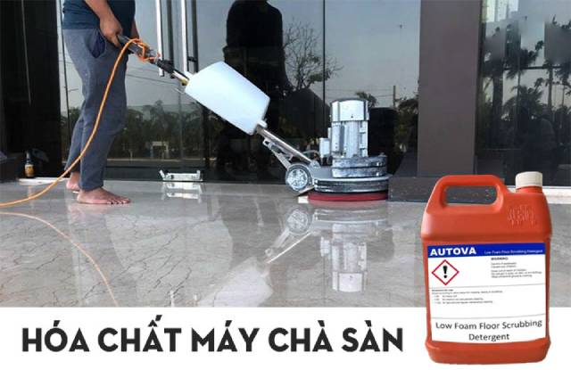
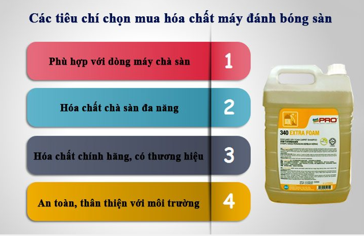
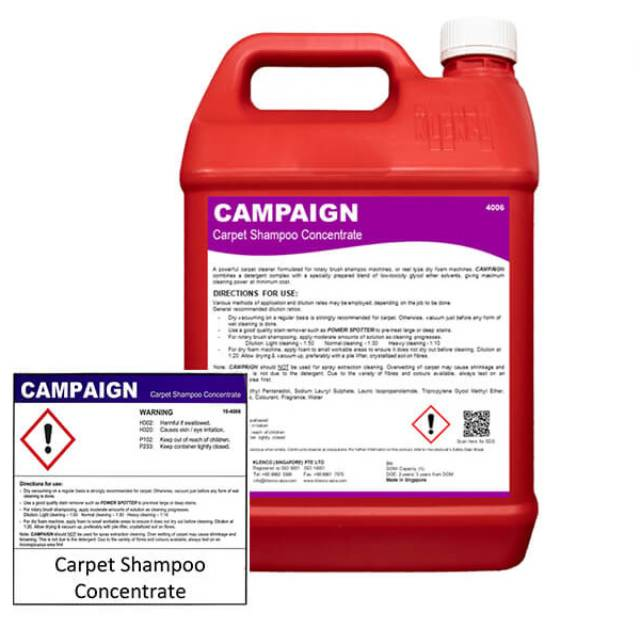

Chia sẻ kinh nghiệm cách chọn lựa hoá chất cho máy chà sàn
Nếu bạn đang tìm kiếm hóa chất vệ sinh cho máy chà sàn hãy chú ý những tiêu trí sau khi lựa chọn hóa chất tẩy rửa có nguồn gốc, xuất xứ rõ ràng. Hiện nay, bên cạnh các loại hóa chất tẩy rửa chấ
Tại sao cần chọn đúng hóa chất cho máy chà sàn?
Việc lựa chọn đúng hóa chất không chỉ ảnh hưởng đến hiệu quả làm sạch mà còn giúp bảo vệ mặt sàn và kéo dài tuổi thọ thiết bị. Dưới đây là những lợi ích quan trọng của việc sử dụng hóa chất phù hợp:
- Tăng hiệu quả làm sạch: Hóa chất chuyên dụng giúp rút ngắn thời gian vệ sinh, làm sạch sâu và đánh bóng bề mặt sàn một cách hiệu quả nhất.
- Xử lý tốt các vấn đề trên mặt sàn: Mỗi loại sàn có những đặc điểm riêng, hóa chất phù hợp sẽ giúp loại bỏ bụi bẩn, vết bẩn cứng đầu mà không gây ảnh hưởng đến bề mặt.
- Bảo vệ tuổi thọ mặt sàn: Hóa chất chất lượng cao không chỉ làm sạch mà còn giúp duy trì độ bền, chống hao mòn, hạn chế tác động tiêu cực đến kết cấu sàn.
Lựa chọn đúng hoá chất sẽ giúp tăng hiệu quả làm sạch và bảo vệ bề mặt sàn
Cách chọn lựa hoá chất cho máy chà sàn
Việc chọn đúng hóa chất không chỉ giúp làm sạch hiệu quả mà còn bảo vệ bề mặt sàn và kéo dài tuổi thọ của máy chà sàn. Hãy cùng tìm hiểu cách chọn lựa hoá chất cho máy chà sàn chuẩn chuyên gia nhé
Xác định loại sàn cần vệ sinh
Trước khi chọn hóa chất, bạn cần xác định loại sàn cần làm sạch:
- Sàn gạch men: Nên chọn hóa chất tẩy rửa không để lại cặn bã
- Sàn bê tông: Dùng hóa chất có khả năng tẩy nhựa, dầu mỡ.
- Sàn gỗ: Chọn dung dịch làm sạch trung tính để tránh hỏng tổn.
- Sàn thảm: Cần chọn hóa chất giặt thảm chống tạo bọt quá nhiều.
Chọn hoá chất theo mục đích sử dụng
Mỗi loại hóa chất có chức năng khác nhau:
- Tẩy rửa cơ bản: Loại trung tính, an toàn cho nhiều bề mặt.
- Tẩy rửa công nghiệp: Chăm sàn bẩn, dầu mỡ.
- Tẩy rửa kháng khuẩn: Phù hợp cho bệnh viện, nhà hàng.
- Hóa chất tẩy rửa chân không: Giữa sàn nhanh chóng, khô ngay sau khi lau.
Chú ý đến thành phần hoá chất
Hãy đọc kỹ thông tin về thành phần trên bao bì:
- Tránh sử dụng hóa chất có hàm lượng axit cao làm hỏng sàn.
- Nên chọn hóa chất có hợp chứng chất lượng và an toàn.
- Hóa chất sinh học hoặc tự phân hủy là sự lựa chọn thân thiện với môi trường.
Kiểm tra tính tương thích của hoá chất với máy chà sàn
Mỗi máy chà sàn có khả năng chịu được một số loại hóa chất nhất định. Trước khi sử dụng, bạn cần:
- Xem hướng dẫn sử dụng của nhà sản xuất máy chà sàn.
- Tránh dùng hóa chất gây ăn mòn làm hỏng bàn chà.
- Dùng đúng tỷ lệ pha chế theo khuyến cáo.
Chọn thương hiệu uy tín
Nên mua hóa chất từ những nhãn hiệu uy tín, chính hãng để đảm bảo chất lượng và an toàn.
Hướng dẫn sử dụng hóa chất máy chà sàn hiệu quả, an toàn
Việc lựa chọn đúng loại hóa chất chà sàn phù hợp là bước quan trọng, nhưng sử dụng đúng cách cũng góp phần đảm bảo hiệu quả làm sạch và bảo vệ bề mặt sàn. Dưới đây là hướng dẫn chi tiết giúp bạn thực hiện vệ sinh sàn an toàn và hiệu quả. Các bước sử dụng hóa chất máy chà sàn đúng cách như sau:

- Bước 1: Chuẩn bị thiết bị và hóa chất vệ sinh
+ Máy chà sàn phù hợp: Chọn loại máy chà sàn đơn, liên hợp hoặc ngồi lái tùy vào diện tích cần làm sạch.
+ Bàn chải hoặc pad chà sàn: Dùng bàn chải cứng để tẩy vết bẩn cứng đầu, pad đánh bóng cho sàn đá hoặc gỗ.
+ Hóa chất chuyên dụng: Lựa chọn đúng loại hóa chất phù hợp với vật liệu sàn (sàn bê tông, gạch men, đá granite, gỗ, epoxy…).
+ Thiết bị bảo hộ: Sử dụng găng tay cao su, khẩu trang và kính bảo hộ để tránh tiếp xúc trực tiếp với hóa chất.
- Bước 2: Làm sạch sơ bộ bề mặt sàn
+ Quét dọn bụi bẩn, rác thô bằng chổi hoặc máy hút bụi công nghiệp.
+ Nếu có lớp phủ cũ, dùng dung dịch tẩy sàn chuyên dụng để loại bỏ trước khi chà sàn.
- Bước 3: Pha hóa chất đúng tỉ lệ
+ Tuân thủ hướng dẫn của nhà sản xuất: Không nên dùng hóa chất quá đậm đặc vì có thể gây hư hại bề mặt sàn hoặc ảnh hưởng đến sức khỏe.
+ Tỉ lệ phổ biến: Thông thường, pha theo tỉ lệ 1:10 hoặc 1:20 tùy mức độ bẩn của sàn.
+ Dùng nước ấm (nếu cần): Một số loại hóa chất hoạt động tốt hơn khi pha với nước ấm thay vì nước lạnh.
+ Tránh trộn lẫn hóa chất: Không nên tự ý kết hợp nhiều loại hóa chất vì có thể tạo ra phản ứng hóa học nguy hiểm.
- Bước 4: Tiến hành chà sàn
+ Đổ dung dịch hóa chất đã pha vào bình chứa của máy chà sàn.
+ Bật máy và điều chỉnh tốc độ phù hợp với loại sàn.
+ Di chuyển máy theo đường thẳng hoặc vòng tròn để đảm bảo mọi khu vực được làm sạch đồng đều.
+ Không để dung dịch tồn đọng quá lâu trên sàn vì có thể làm hỏng bề mặt.
- Bước 5: Loại bỏ nước bẩn và làm khô sàn
+ Máy chà sàn liên hợp: Chỉ cần bật chế độ hút để máy tự động thu gom nước bẩn.
+ Máy chà sàn đơn: Dùng máy hút bụi công nghiệp loại hút nước để làm khô sàn.
+ Lau lại sàn bằng cây lau nhà nếu cần để đảm bảo không còn hóa chất dư thừa.
- Bước 6: Kiểm tra và vệ sinh thiết bị
+ Đánh giá hiệu quả làm sạch, nếu chưa đạt yêu cầu, có thể chà sàn lại lần nữa với tỉ lệ hóa chất phù hợp hơn.
+ Vệ sinh máy chà sàn, bàn chải hoặc pad chà sàn sau mỗi lần sử dụng để tránh tích tụ bụi bẩn và hóa chất.
+ Để máy ở nơi khô ráo, thoáng mát, tránh ánh nắng trực tiếp.
Lưu ý khi chọn mua hoá chất máy chà sàn

Việc lựa chọn hóa chất máy chà sàn phù hợp không chỉ giúp nâng cao hiệu quả làm sạch mà còn đảm bảo an toàn cho người sử dụng và kéo dài tuổi thọ của sàn nhà. Dưới đây là những tiêu chí quan trọng bạn cần xem xét khi chọn mua hóa chất chà sàn.
Kiểm tra thành phần và hàm lượng hóa chất
- Thành phần của hóa chất có ảnh hưởng lớn đến:
+ Độ bền của sàn: Một số hóa chất có tính ăn mòn cao có thể làm hư hại bề mặt sàn, đặc biệt là sàn đá tự nhiên, sàn gỗ, sàn nhựa vinyl hoặc epoxy.
+ Sức khỏe con người: Hóa chất có nồng độ cao hoặc chứa các thành phần độc hại có thể gây kích ứng da, ảnh hưởng đến hệ hô hấp hoặc gây nguy hiểm khi tiếp xúc lâu dài.
+ Thiết bị vệ sinh: Hóa chất không phù hợp có thể gây mài mòn hoặc làm giảm hiệu suất của bàn chải và pad chà sàn.
- Cách chọn:
+ Ưu tiên các sản phẩm có thành phần thiên nhiên hoặc hóa chất thân thiện với môi trường tránh axit mạnh làm hỏng sàn và ảnh hưởng sức khỏe.
- Kiểm tra mức độ pH:
+ Hóa chất trung tính (pH 6-8): Thích hợp cho sàn đá, sàn gỗ và các bề mặt dễ bị ăn mòn.
+ Hóa chất có tính kiềm cao (pH > 8): Thích hợp để tẩy dầu mỡ, chất bẩn công nghiệp nặng.
+ Hóa chất có tính axit (pH < 6): Dùng để tẩy vết ố, cặn vôi, gỉ sét (cần sử dụng cẩn thận).

Chú ý bảng thành phần khi chọn mua hóa chất vệ sinh để đảm bảo an toàn
Xác định mục đích sử dụng
Hiện nay, hóa chất máy chà sàn có nhiều loại với công dụng khác nhau. Khi chọn mua, bạn cần xác định rõ nhu cầu để tránh lãng phí hoặc sử dụng sai mục đích.
- Hóa chất tẩy rửa và vệ sinh sàn:
+ Dùng để làm sạch bụi bẩn, dầu mỡ, cặn bám trên bề mặt sàn.
+ Phù hợp với các loại sàn công nghiệp, sàn gạch men, bê tông, kho xưởng.
Ví dụ: Dung dịch tẩy dầu mỡ công nghiệp, nước lau sàn trung tính.
- Hóa chất đánh bóng sàn:
+ Giúp phục hồi độ bóng cho sàn đá, gạch men, sàn epoxy.
+ Tăng độ bền của sàn, hạn chế trầy xước.
Ví dụ: Dung dịch đánh bóng đá marble, granite.
- Hóa chất chuyên dụng cho vết bẩn cứng đầu:
+ Loại bỏ vết ố, cặn canxi, rỉ sét, vết sơn trên sàn.
+ Cần đọc kỹ hướng dẫn để tránh làm hỏng bề mặt sàn.
Ví dụ: Chất tẩy xi măng, tẩy rỉ sét chuyên dụng.
- Hóa chất diệt khuẩn và khử mùi:
+ Sử dụng cho bệnh viện, nhà hàng, khách sạn để đảm bảo môi trường sạch khuẩn.
Ví dụ: Dung dịch sát khuẩn chuyên dụng.
Chọn hóa chất phù hợp với từng loại sàn
Không phải tất cả các loại hóa chất đều phù hợp với mọi loại sàn. Việc sử dụng sai hóa chất có thể gây hư hỏng hoặc làm mất thẩm mỹ của sàn nhà. Gợi ý chọn hóa chất theo từng loại sàn:
- Sàn đá tự nhiên (granite, marble, terrazzo,…): Dùng hóa chất trung tính hoặc chuyên dụng cho đá, tránh axit mạnh.
- Sàn gỗ, sàn nhựa vinyl: Dùng hóa chất có độ pH trung tính, không chứa dung môi mạnh.
- Sàn gạch men, sàn bê tông: Có thể dùng hóa chất có tính kiềm để tẩy rửa dầu mỡ.
- Sàn epoxy: Dùng hóa chất không chứa dung môi mạnh để tránh làm hỏng lớp phủ epoxy.
Kiểm tra nguồn gốc, xuất xứ và thương hiệu
Hiện nay trên thị trường có nhiều loại hóa chất vệ sinh sàn với chất lượng khác nhau. Việc sử dụng hóa chất không rõ nguồn gốc có thể gây ảnh hưởng đến sức khỏe và giảm hiệu quả vệ sinh. Kinh nghiệm chọn mua:
- Chọn sản phẩm có nhãn mác, chứng nhận đầy đủ.
- Ưu tiên các thương hiệu uy tín, có thông tin rõ ràng về thành phần, hướng dẫn sử dụng.
- Tránh mua sản phẩm trôi nổi, không rõ nguồn gốc hoặc giá quá rẻ so với thị trường.
Đảm bảo an toàn khi sử dụng hóa chất
- Sử dụng hóa chất vệ sinh sàn không đúng cách có thể gây nguy hiểm cho người vận hành và ảnh hưởng đến chất lượng không gian sống.
- Lưu ý quan trọng:
+ Đọc kỹ hướng dẫn sử dụng trước khi pha hóa chất.
+ Mang đầy đủ đồ bảo hộ như găng tay, kính bảo hộ, khẩu trang khi tiếp xúc với hóa chất.
+ Tránh hít phải hơi hóa chất, làm việc ở khu vực thông thoáng.
+ Bảo quản hóa chất đúng cách: Đậy kín nắp sau khi sử dụng, để xa tầm tay trẻ em.
+ Không trộn lẫn hóa chất, đặc biệt là các chất có thành phần axit và kiềm mạnh.
Hy vọng với những kinh nghiệm trên, bạn có thể dễ dàng lựa chọn loại hóa chất phù hợp, đảm bảo hiệu quả vệ sinh sàn nhà an toàn và tối ưu nhất! Hãy liên hệ ngay với chúng tôi qua số 0967.436.388 để được tư vấn.